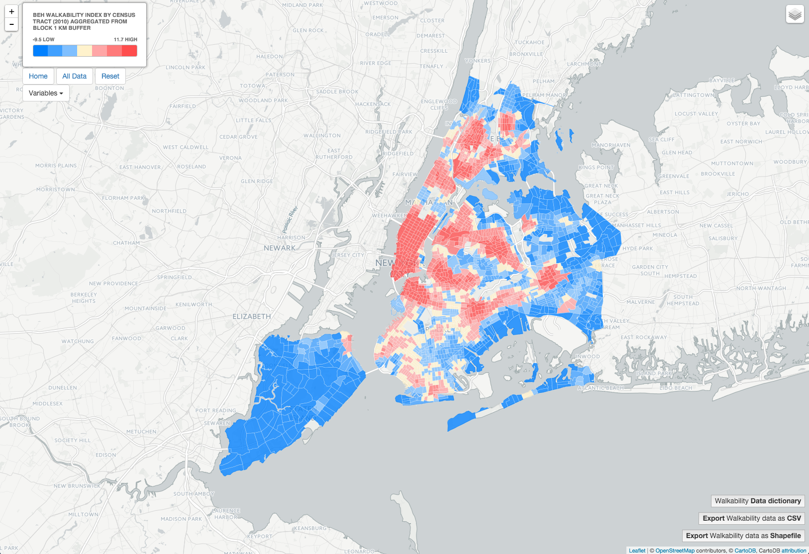
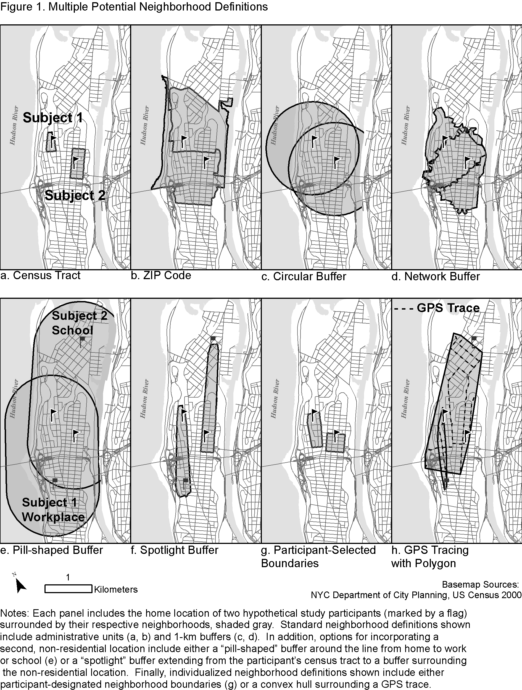
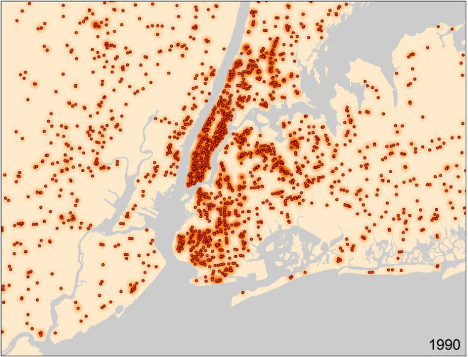
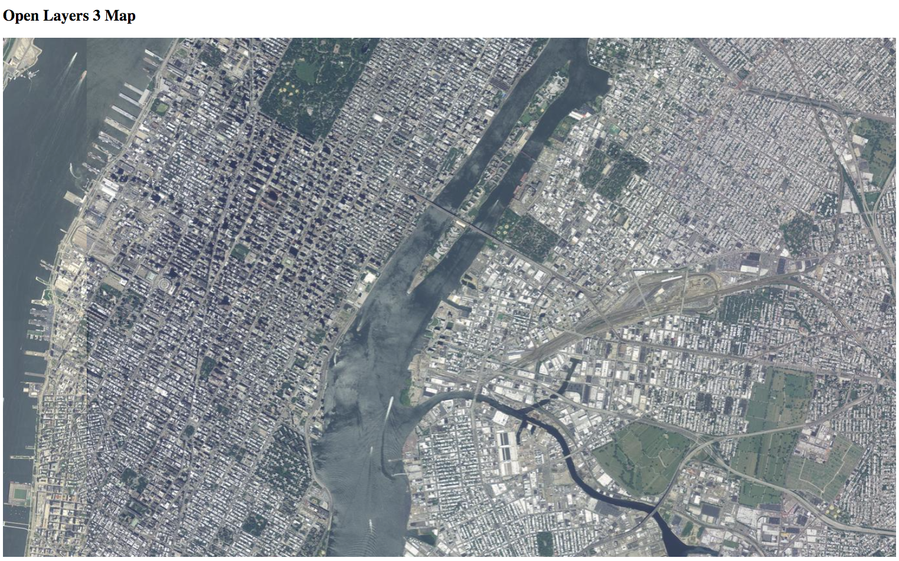

Census Tract 2010 identifier with CartoDB SQL API, link with US Census API to get population values

BEH Research Group Data Portal for CPRC (in development)
Runkeeper Animaction in CartoDB map - Link to Blogpost and Tutorial

NYC Traffic Accidents - Blogpost Tutorial

D3 Google Flu Trends Map by US Cities

D3.js Class Presenation - Link to Blogpost
GPS Stationary Battery Test

Multiple Neighborhood Definitions illustration for figure in "Steps Forward: Review and Recommendations for Research on Walkability, Physical Activity and Cardiovascular Health" Public Health Reviews, Vol. 33, No 2, 484-506
Tanzania Dispensary and Intervention Locations

MapBox Tutorial - Mapbox Source Quickstart

NETS Animation - Healthy Food Outlets 1990-2010
Open Layers - Aerial Imagery with Open Layers
